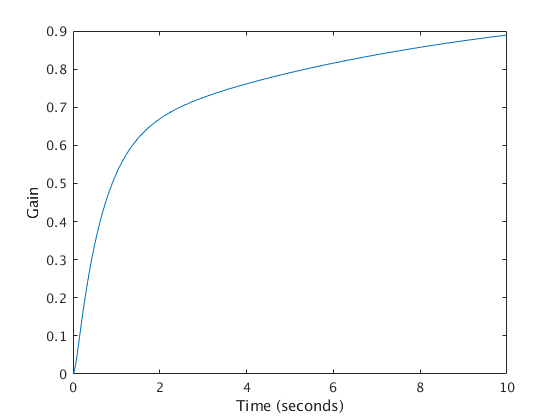
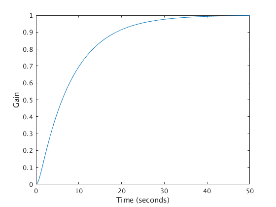
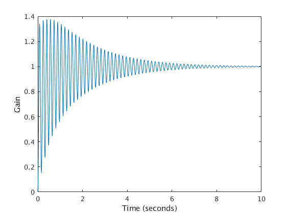
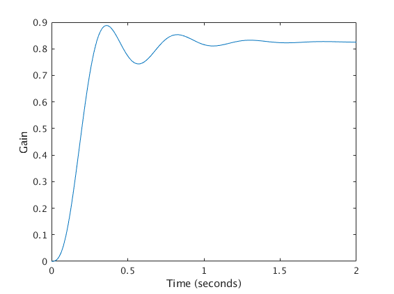
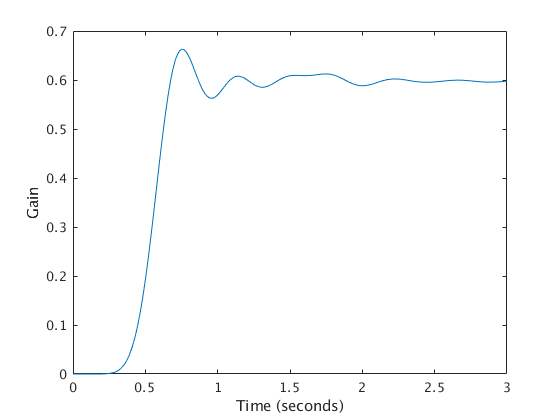

Contents
Control Systems Homework 5 Problem 1
A1 = [-20, -2, 0, 0; 10, 0, -10, 0; 0, 5, -100, -5; 0, 0, 4, 0];
B1 = [2;0;0;0];
C1 = [0,1,0,0];
D1 = [0];
G1 = ss(A1,B1,C1,D1);
tf(G1)
zpk(G1)
t1 = 0:0.01:10;
y1 = step(G1,t1);
plot(t1, y1);
xlabel('Time (seconds)');
ylabel('Gain');
ans =
20 s^2 + 2000 s + 400
---------------------------------------
s^4 + 120 s^3 + 2090 s^2 + 3400 s + 400
Continuous-time transfer function.
ans =
20 (s+99.8) (s+0.2004)
--------------------------------------
(s+99.3) (s+18.91) (s+1.67) (s+0.1276)
Continuous-time zero/pole/gain model.

Control Systems Homework 5 Problem 2
A2 = [-20, -2, 0, 0; 10, 0, -10, 0; 0, 5, -100, -5; 0, 0, 4, 0];
B2 = [2;0;0;0];
C2 = [0,0,0,1];
D2 = [0];
G2 = ss(A2,B2,C2,D2);
tf(G2)
zpk(G2)
t2 = 0:0.01:50;
y2 = step(G2,t2);
figure;
plot(t2, abs(y2));
xlabel('Time (seconds)');
ylabel('Gain');
ans =
400
---------------------------------------
s^4 + 120 s^3 + 2090 s^2 + 3400 s + 400
Continuous-time transfer function.
ans =
400
--------------------------------------
(s+99.3) (s+18.91) (s+1.67) (s+0.1276)
Continuous-time zero/pole/gain model.

Control Systems Homework 5 Problem 3
A3 = [0, -10, 0, 0; 100, -0.2, -100, 0; 0, 5, 0, 5; 0, 0, -50, -83.33];
B3 = [10;0;0;0];
C3 = [0,1,0,0];
D3 = [0];
G3 = ss(A3,B3,C3,D3);
tf(G3)
zpk(G3)
t3 = 0:0.01:10;
y3 = step(G3,t3);
figure;
plot(t3, abs(y3));
xlabel('Time (seconds)');
ylabel('Gain');
ans =
1000 s^2 + 83330 s + 2.5e05
-----------------------------------------------
s^4 + 83.53 s^3 + 1767 s^2 + 1.25e05 s + 2.5e05
Continuous-time transfer function.
ans =
1000 (s+3.117) (s+80.21)
----------------------------------------
(s+80.42) (s+2.053) (s^2 + 1.06s + 1514)
Continuous-time zero/pole/gain model.

Control Systems Homework 5 Problem 4
C4 = 0.01; R41 = 10; R42 = 100;
A4 = [-1/(C4*R42), -1/(C4*R41), 0; 1/(C4*R41), -1/(C4*R42), -1/(C4*R41); 0, 1/(C4*R41), -1/(C4*R42)-1/(C4*R41)];
B4 = [1/(C4*R41); 0; 0];
C4 = [0,0,1];
D4 = [0];
G4 = ss(A4,B4,C4,D4);
tf(G4)
zpk(G4)
t4 = 0:0.01:2;
y4 = step(G4,t4);
figure;
plot(t4, abs(y4));
xlabel('Time (seconds)');
ylabel('Gain');
ans =
1000
---------------------------
s^3 + 13 s^2 + 223 s + 1211
Continuous-time transfer function.
ans =
1000
--------------------------------
(s+6.698) (s^2 + 6.302s + 180.8)
Continuous-time zero/pole/gain model.

Control Systems Homework 5 Problem 5
C5 = 0.01; R51 = 10; R52 = 100;
A5 = [-1/(C5*R52), -1/(C5*R51), 0, 0, 0, 0, 0, 0, 0, 0;...
1/(C5*R51), -1/(C5*R52), -1/(C5*R51), 0, 0, 0, 0 0, 0, 0;...
0, 1/(C5*R51), -1/(C5*R52), -1/(C5*R51), 0, 0, 0, 0, 0, 0;...
0, 0, 1/(C5*R51), -1/(C5*R52), -1/(C5*R51), 0, 0, 0, 0, 0;...
0, 0, 0, 1/(C5*R51), -1/(C5*R52), -1/(C5*R51), 0, 0, 0, 0;...
0, 0, 0, 0, 1/(C5*R51), -1/(C5*R52), -1/(C5*R51), 0, 0, 0;...
0, 0, 0, 0, 0, 1/(C5*R51), -1/(C5*R52), -1/(C5*R51), 0, 0;...
0, 0, 0, 0, 0, 0, 1/(C5*R51), -1/(C5*R52), -1/(C5*R51), 0;...
0, 0, 0, 0, 0, 0, 0, 1/(C5*R51), -1/(C5*R52), -1/(C5*R51);...
0, 0, 0, 0, 0, 0, 0, 0, 1/(C5*R51), -1/(C5*R52) - 1/(C5*R51)];
B5 = [(1/(C5*R51)); 0; 0; 0; 0; 0; 0; 0; 0; 0];
C5 = [0,0,0,0,0,0,0,0,0,1];
D5 = [0];
G5 = ss(A5,B5,C5,D5);
tf(G5)
zpk(G5)
t5 = 0:0.01:3;
y5 = step(G5,t5);
figure;
plot(t5, abs(y5));
xlabel('Time (seconds)');
ylabel('Gain');
ans =
1e10
------------------------------------------------------------------------
s^10 + 20 s^9 + 1035 s^8 + 1.568e04 s^7 + 3.623e05 s^6 + 4e06 s^5
+ 5.004e07 s^4 + 3.669e08 s^3 + 2.335e09 s^2 + 8.752e09 s
+ 1.674e10
Continuous-time transfer function.
ans =
1e+10
------------------------------------------------------------------------
(s^2 + 6.74s + 16.56) (s^2 + 4.863s + 62.3) (s^2 + 3.547s + 160.5)
(s^2 + 2.68s + 275.8) (s^2 + 2.17s + 366.7)
Continuous-time zero/pole/gain model.
